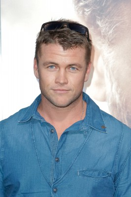

#7007 The Osiris Child: Science Fiction Volume One


 IMDB-Wertung: 5.8 / 10
IMDB-Wertung: 5.8 / 10  Metascore: 0
Metascore: 0 
In der Zukunft ist das Terra-Forming von Planeten zu einem großen Geschäft geworden und eine der Firmen, die in diesem Geschäftsfeld tätig sind, ist das intergalaktische Konglomerat Exor. Diese Firma geht bei ihrer Arbeit äußerst skrupellos vor und als in einer der Gefangenenkolonien, die für Exor die schwere Arbeit leisten, angeblich ein Virus ausbricht, und daraufhin das Gefängnis samt der nahegelegenen Hauptstadt weggebombt werden soll, muss der Exor-Offizier Kane Sommerville auf eigene Faust seine Tochter Indi retten, die sich gerade in der Stadt befindet. Doch sein Raumschiff wird abgeschossen und so muss er sich wohl oder übel mit dem ausgebrochenen Sträfling Sy Lombrok zusammentun...
Jahr: 2016
Dauer: 99 Minuten
FSK: 16
Land: Australien Studio: RLJ EntertainmentTonspuren: DD5.1 - ,
Untertitel:
Auflösung: 1080p (1920x720) Größe: 6983 MB
Genre: Action, Thriller, Horror, Drama, Sci-Fi, Abenteuer
Regisseur: Shane Abbess
Drehbuch: Shane Abbess
Soundtrack:
Darsteller:
 Kellan Lutz als Sy Lombrok
Kellan Lutz als Sy Lombrok- Daniel MacPherson als Lt. Kane Sommerville
 Isabel Lucas als Gyp
Isabel Lucas als Gyp Luke Ford als Bill
Luke Ford als Bill Rachel Griffiths als General Lynex
Rachel Griffiths als General Lynex Temuera Morrison als Warden Mourdain
Temuera Morrison als Warden Mourdain- Bren Foster als Charles Kreat
- Teagan Croft als Indi Sommerville
 Grace Huang als Jandi
Grace Huang als Jandi- Firass Dirani als Carmel
- Harry Pavlidis als Hopper Joe
- Paul Winchester als Mandel
- Zoe Ventoura als Sgt. Cognit
 Brendan Clearkin als Bostok Kramer
Brendan Clearkin als Bostok Kramer Vincent Andriano als Vim Martin
Vincent Andriano als Vim Martin- Andy Rodoreda als Colonel Michaels
- Ian Roberts als Nimal
- Zoe Carides als Rominja
- Dean Kyrwood als Rescue Officer Muzz Whittemore
- Louise Dodge als Rescue Officer Fitzgerald
- Bianca Bradey als Shae Holliday
- Aileen Beale als Lt. Crestal
- Kristy Best als Kiara
- Chris Broadbent als Intern Doctor
- Scott Broadfoot als Military Guard #1
- Kevin Copeland als Attacus Reece
- Lauren Grimson als Warden's Assistant
-  Luke Hemsworth als Travek
- Nick Hunter als Court Guard
- Marcus Johnson als Captain Lemar
 Hiroshi Kasuga als A Prisoner
Hiroshi Kasuga als A Prisoner- Kathy Luu als Nurse Tammy
- Grant Lyndon als Dr. Curuthers
- Felicity McKay als Nurse #3
- Louisa Mignone als April Sommerville
- Joshua Morton als Ambo
- Sean James Murphy als Clay Blaxton
- Aaron Scully als Prisoner
- Dwaine Stevenson als The Ragged
- Stephen Leeder als Antonio
- Caleb Alloway als Secretary Millan
- Michael Gelonesi als Intern nurse
- Denning Isles als Inmate / Ragged
- Richard Maait als Nurse
- Peter Maple als Prisoner X
- Barend Nieuwstraten als Tuxan
- Dario Omar als Prisoner
- Ford Sarhan als Lynex's Assistant
Datei: X:\2016(N-Z)\Osiris Child Science Fiction Volume One, The (2016, FSK16, 1920x720).mkv seit 15.09.2017
Festplatte: HD 2016(A-Z)
 Es gibt insgesamt 182 Filme in der Gruppe '2016(N-Z)'
Es gibt insgesamt 182 Filme in der Gruppe '2016(N-Z)'